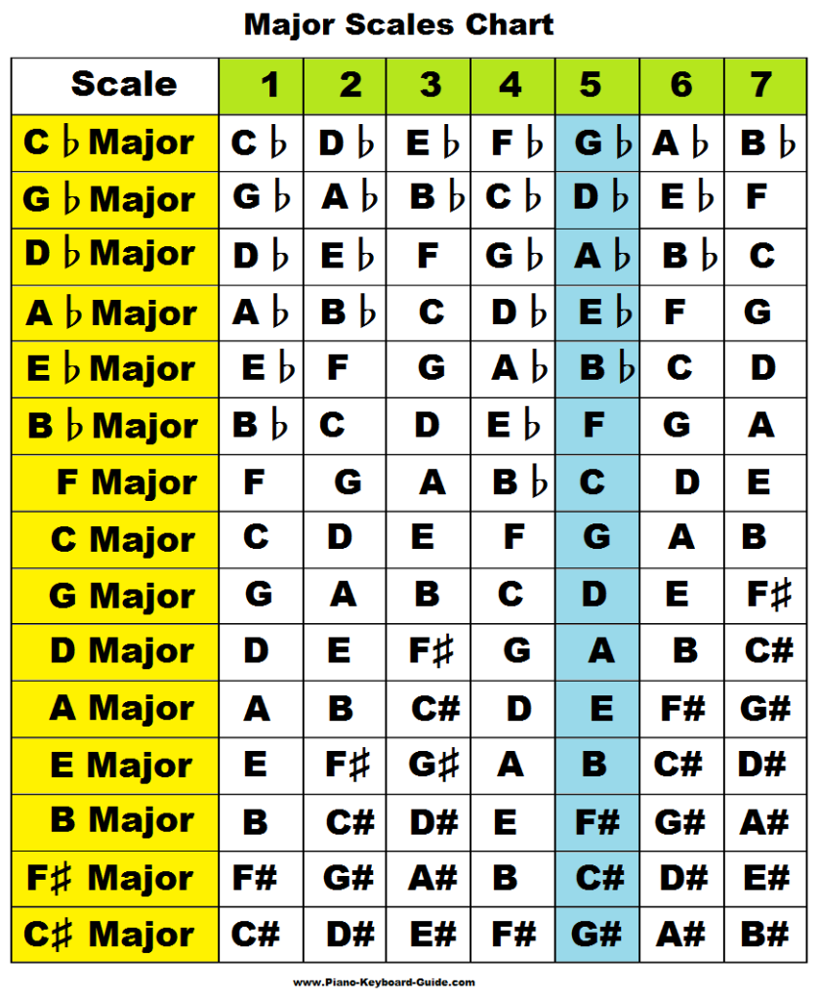
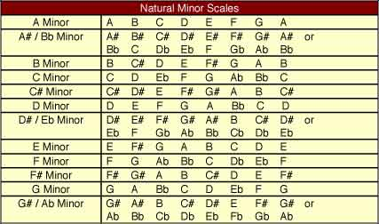

Are you an aspiring musician? Do you want to be able to play just like your favorite artist? Wait no more! My Favorite Note will calculate the favored note, scale, and chord out of any given artist. This way, you will be able to emulate their tonality, pitch, and rhythm. To begin, enter the name of a musical artist.
|
Enter the name of an artist: |
Result displayed here
|  |  |